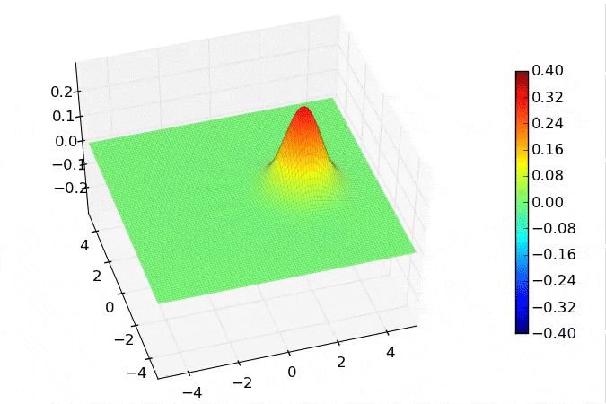

Wigner distributions from the evolution of the Jaynes-Cummings model¶
Demonstrates the generation of Wigner distributions from the master equation evolution of the Jaynes-Cummings model.
import matplotlib
from qutip import *
from mpl_toolkits.mplot3d import Axes3D
from matplotlib import cm
import matplotlib.pyplot as plt
#
# set up the calculation
#
wc = 1.0 * 2 * pi # cavity frequency
wa = 1.0 * 2 * pi # atom frequency
g = 0.05 * 2 * pi # coupling strength
kappa = 0.05 # cavity dissipation rate
gamma = 0.15 # atom dissipation rate
N = 10 # number of cavity fock states
use_rwa = True
# intial state
psi0 = tensor(coherent(N,1.5), basis(2,0)) # a coherent state the in cavity
tlist = linspace(0,25,100)
# Hamiltonian
idc = qeye(N)
ida = qeye(2)
a = tensor(destroy(N), ida)
sm = tensor(idc, destroy(2))
if use_rwa:
# use the rotating wave approxiation
H = wc * a.dag() * a + wa * sm.dag() * sm + g * (a.dag() * sm + a * sm.dag())
else:
H = wc * a.dag() * a + wa * sm.dag() * sm + g * (a.dag() + a) * (sm + sm.dag())
# collapse operators
c_op_list = []
n_th_a = 0.0 # zero temperature
rate = kappa * (1 + n_th_a)
if rate > 0.0:
c_op_list.append(sqrt(rate) * a)
rate = kappa * n_th_a
if rate > 0.0:
c_op_list.append(sqrt(rate) * a.dag())
rate = gamma
if rate > 0.0:
c_op_list.append(sqrt(rate) * sm)
# evolve and calculate expectation values
wf_list = odesolve(H, psi0, tlist, c_op_list, [])
xvec = linspace(-5.,5.,100)
X,Y = meshgrid(xvec, xvec)
if not os.path.exists("jc_images"):
os.mkdir("jc_images")
#create list of args for use in func
args=[[i,wf_list[i]] for i in xrange(len(wf_list))]
#function for use in parfor
def func(args):
i=args[0]
wf=args[1]
# trace out the atom
rho_cavity = ptrace(wf, 0)
W = wigner(rho_cavity, xvec, xvec)
fig = plt.figure(figsize=(9, 6))
ax = Axes3D(fig, azim=-107, elev=49)
surf=ax.plot_surface(X, Y, W, rstride=1, cstride=1, cmap=cm.jet, alpha=1.0, linewidth=0.05, vmax=0.4, vmin=-0.4)
ax.set_xlim3d(-5, 5)
ax.set_ylim3d(-5, 5)
ax.set_zlim3d(-0.30, 0.30)
fig.colorbar(surf, shrink=0.65, aspect=20)
#plt.pcolor(X, Y, W)
#plt.colorbar()
plt.savefig("jc_images/jc_model_wigner_"+str(i)+".png")
plt.close()
print i #<--- useful to get feedback on how far along the computation is
parfor(func,args) #evaluate func in parallel
The saved images may be used to generate a animation of the Wigner function dynamics.
